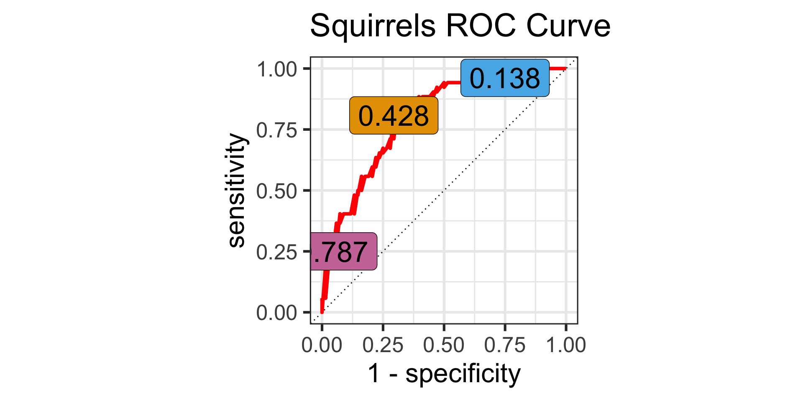

PSTAT 100: ICA 02 Review
Some Extra Questions
Department of Statistics and Applied Probability; UCSB
Summer Session A, 2025
\[ \newcommand\R{\mathbb{R}} \newcommand{\N}{\mathbb{N}} \newcommand{\E}{\mathbb{E}} \newcommand{\Prob}{\mathbb{P}} \newcommand{\F}{\mathcal{F}} \newcommand{\1}{1\!\!1} \newcommand{\comp}[1]{#1^{\complement}} \newcommand{\Var}{\mathrm{Var}} \newcommand{\SD}{\mathrm{SD}} \newcommand{\vect}[1]{\vec{\boldsymbol{#1}}} \newcommand{\tvect}[1]{\vec{\boldsymbol{#1}}^{\mathsf{T}}} \newcommand{\hvect}[1]{\widehat{\boldsymbol{#1}}} \newcommand{\mat}[1]{\mathbf{#1}} \newcommand{\tmat}[1]{\mathbf{#1}^{\mathsf{T}}} \newcommand{\Cov}{\mathrm{Cov}} \DeclareMathOperator*{\argmin}{\mathrm{arg} \ \min} \newcommand{\iid}{\stackrel{\mathrm{i.i.d.}}{\sim}} \]
Division of Labor
Within each of your groups (tables), assign one person to be:
- The scribe (who will write your group’s answers on the board)
- The timekeeper (the one who ensures your group is staying on-task)
As the ICA is closed-book, please put away all electronics and use only your note sheets.
Question 1: Squirrel!
Setup, and Part (a)
Two common types of squirrels in California are the Tree Squirrel and the Ground Squirrel. These species differ in several characteristics, one of which being weight. To that end, we consider building a classifier to classify a squirrel as either "Tree" or "Ground" based on its weight (in lbs).
Part (a):
Encoding "Tree" as a value of 1, the following regression table is outputted:
Coefficients:
Estimate Std. Error t value Pr(>|t|)
(Intercept) 2.24749 0.28725 7.824 2.42e-12 ***
wt -0.12093 0.01897 -6.376 3.68e-09 ***
---
Signif. codes: 0 ‘***’ 0.001 ‘**’ 0.01 ‘*’ 0.05 ‘.’ 0.1 ‘ ’ 1What is the probability that a 12-pound squirrel is a Tree Squirrel? Round to four decimal places.
03:30
Question 1: Squirrel!
Part (b)
Part (b)
We can use the fitted model from part (a) to generate a ROC curve, pictured below with some corresponding threshold values:

Based on the ROC Curve to the left, what is the ideal threshold for building a classifier, and how can you tell?
03:00
Question 1: Squirrel!
Part (c)
For Parts (c) - (d): We now consider the “opposite” problem: that is, we wish to predict a squirrel’s weight given its species. Our data is stored in a data frame called squirrels, containing two columns: species (the species, either "Ground" or "Tree"), and wt (the weight, in lbs).
Part (c)
Consider the model: \(y_i = \beta_0 + \beta_1 1 \! \! 1\{\texttt{species}_i = \texttt{Tree}\} + \varepsilon_i\) where we impose the “usual” assumptions on \(\varepsilon_i\), and \(y_i\) denotes the ith squirrel’s weight.
What are the OLS estimates for β0 and β1? For your convenience, we have provided the following summaries:
| species | Avg. Weight |
|---|---|
| Ground | 15.92 |
| Tree | 13.8 |
03:00
Question 1: Squirrel!
Part (c)
For Parts (c) - (d): We now consider the “opposite” problem: that is, we wish to predict a squirrel’s weight given its species. Our data is stored in a data frame called squirrels, containing two columns: species (the species, either "Ground" or "Tree"), and wt (the weight, in lbs).
Part (d)
Here is some R code and its output:
Based on this, suppose we ran lm(species ~ wt, data = "squirrels"). Which species would R use as the baseline series? Based on your answer to this question, is this call to lm() fitting the same model as in Part (c) or not? Explain.
03:00
Question 2: We All Scream for Ice Cream
GauchoCream is a new brand of ice cream using a sweetener that it claims “tastes just like sugar.” To test this, Morgana recruits 100 UCSB student volunteers and randomly divides them into two groups of 50 each. To one group, she gives a scoop of GauchoCream ice cream and to the other group she gives a scoop of Thrifty ice cream (which is sweetened with sugar).
She asks each of the 100 participants whether they believed their ice cream was sweetened with sugar, or an artificial sweetener, and records these observations. She compares the proportion of each group that correctly identified their ice cream’s sweetener and finds: 70% of those who had Thrifty ice cream correctly identified it as being sweetened with sugar, but only 20% of those who had GauchoCream ice cream correctly identified it as being artificially sweetened.
Is this an Experiment or an Observational Study? Is it Longitudinal or Cross-Sectional? Explain.
04:00
Question 3: Density
We have taken a sample of size one from an unknown distribution; this sampled value is 1. Sketch the Kernel Density Estimate (KDE) of the true density fX(x), using a boxcar kernel with a bandwidth of 1. Clearly indicate your axis labels and values!
03:00
Question 4: Regression
Setup
We fit a regression of a variable y onto three covariates: x1, x2, and x3. Some output is provided below:
Call:
lm(formula = y ~ ., data = df1)
Residuals:
Min 1Q Median 3Q Max
-2.98565 -0.69137 0.07014 0.74795 2.27946
Coefficients:
Estimate Std. Error t value Pr(>|t|)
(Intercept) 0.56932 0.21328 2.669 0.00864 **
x1 1.16899 0.03971 29.441 < 2e-16 ***
x2 1.77788 0.05016 35.447 < 2e-16 ***
x3 2.09877 0.01000 209.831 < 2e-16 ***
---
Signif. codes: 0 '***' 0.001 '**' 0.01 '*' 0.05 '.' 0.1 ' ' 1
Residual standard error: 1.044 on 121 degrees of freedom
Multiple R-squared: 0.9976, Adjusted R-squared: 0.9976
F-statistic: 1.712e+04 on 3 and 121 DF, p-value: < 2.2e-16 x1 x2 x3 y
Min. :-4.923 Min. :-1.416 Min. :-19.0874 Min. :-36.85
1st Qu.: 2.378 1st Qu.: 3.582 1st Qu.: 0.4951 1st Qu.: 13.22
Median : 3.993 Median : 4.955 Median : 6.8132 Median : 27.30
Mean : 4.040 Mean : 5.049 Mean : 5.4186 Mean : 25.64
3rd Qu.: 6.366 3rd Qu.: 6.760 3rd Qu.: 11.6295 3rd Qu.: 41.01
Max. :13.127 Max. :13.785 Max. : 34.7374 Max. : 85.44 Question 4: Regression
Questions
Part (a): Holding all else constant, to what average increase in y does a one-unit increase in x2 correspond?
Part (b): A new observation has (x1, x2, x3) values (25, 0, -13). Either use the model to predict the associated response variable, or explain why doing so is not a good idea.
Part (c): Is there evidence of multicollinearity in the model? How can you tell?
Part (d): What are the two main assumptions we make on the noise in our model, and how are they reflected in a residuals plot?
05:00

PSTAT 100 - Data Science: Concepts and Analysis, Summer 2025 with Ethan P. Marzban